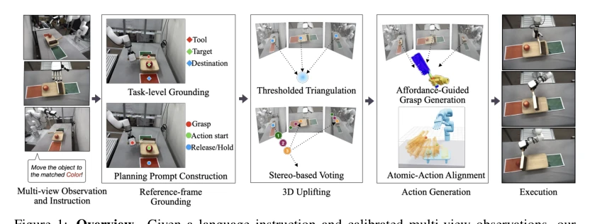
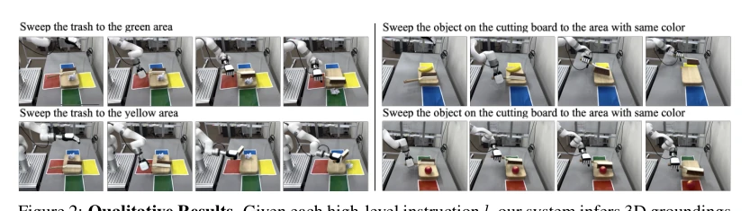
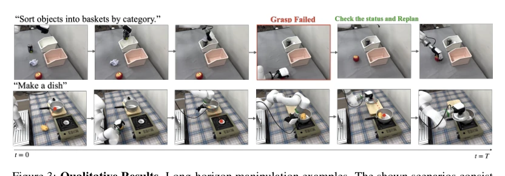

This paper attempts to address the poor generalization of end-to-end VLA models using a modular approach. The core is decoupling VLM semantic reasoning and physical execution, lifting 2D keypoints to 3D through multi-view fusion. Highlights are the performance in zero-shot tool use and long-horizon tasks, superior to fine-tuned VLA. But there are also many drawbacks: if VLM 2D reasoning is inaccurate, 3D reconstruction is garbage; the "Bag of Atomic Actions" limits the flexibility of tool use, unable to handle unseen new tools; and it relies on off-the-shelf motion planners, failing when encountering singularities. Overall, it is a clever engineering integration, but still far from true general-purpose dexterous manipulation, as VLM hallucination issues remain unresolved, and it cannot handle fine manipulation in-hand.
研究动机Motivation
现有 VLA 模型 [1-5] 虽然强，但依赖大量机器人数据，泛化到新物体/工具难。人类示范重定向 [24-26] 存在肢体差异导致接触不可行。单视图 VLM 推理缺乏深度信息，难以满足灵巧操作对 3D 几何的严格要求（如抓取点、工具轨迹）。本文旨在通过模块化设计，利用 VLM 的零-shot 推理能力结合多视图几何约束，实现无需微调的长程灵巧操作。特别是针对工具使用场景，需要精确的 3D 接触点，单视图难以胜任，且现有方法难以处理长程任务中的状态变化。
Existing VLA models [1-5], although strong, rely on large amounts of robot data and find it difficult to generalize to new objects/tools. Human demonstration retargeting [24-26] suffers from limb differences leading to infeasible contact. Single-view VLM reasoning lacks depth information, making it difficult to meet the strict 3D geometry requirements for dexterous manipulation (such as grasp points, tool trajectories). This paper aims to achieve fine-tuning-free long-horizon dexterous manipulation through modular design, leveraging VLM zero-shot reasoning capabilities combined with multi-view geometric constraints. Particularly for tool use scenarios, precise 3D contact points are needed, which single-view struggles to handle, and existing methods struggle to handle state changes in long-horizon tasks.
方法Method
整体流程分四步。首先，VLM 在参考视图生成 2D 关键点和原语序列（抓取、放置、工具使用）。其次，核心创新是多视图融合：结合 RANSAC 三角化和参考视图射线投票（Ray Voting），解决遮挡和深度歧义，将 2D 点提升为 3D 坐标。具体而言，射线投票沿参考相机射线采样深度候选点，VLM 选择最匹配的索引。对于工具使用，引入“原子动作库”（Bag of Atomic Actions），将预存的 6D 工具轨迹对齐到当前场景。最后，基于 3D 功能区域（Affordance）生成灵巧抓取，通过多视图包含投票筛选网格顶点，再用优化生成器产生抓取姿态。系统包含闭环验证，失败可重规划。
The overall process is divided into four steps. First, the VLM generates 2D keypoints and primitive sequences (grasp, place, tool use) in the reference view. Second, the core innovation is multi-view fusion: combining RANSAC triangulation and reference view Ray Voting (Ray Voting) to solve occlusion and depth ambiguity, lifting 2D points to 3D coordinates. Specifically, Ray Voting (Ray Voting) samples depth candidate points along reference camera rays, and the VLM selects the most matching index. For tool use, a "Bag of Atomic Actions" (Bag of Atomic Actions) is introduced, aligning pre-stored 6D tool trajectories to the current scene. Finally, dexterous grasps are generated based on 3D Affordances (Affordance), filtering mesh vertices via multi-view inclusion voting, then using an optimizer to generate grasp poses. The system includes closed-loop verification, allowing replanning upon failure.

Figure 1: Overview. Given a language instruction and calibrated multi-view observations, our framework uses multi-view VLM grounding with robust triangulation and reference-view ray voting to infer task-relevant 3D groundings, generates affordance-aware dexterous grasps, and executes pick-and-place or tool-use plans through reusable action primitives.
Tested in a real desktop environment, using xArm and Inspire dexterous hands. Compared against single-view RGB-D baseline and fine-tuned VLA (GR00T, Being-HO). Metrics include success rate, localization error, and collision. Results show the zero-shot method outperforms RGB-D in complex scenes (such as cluttered grasping); on tool use tasks, fine-tuned VLA failed completely, while this method succeeded. Multi-view fusion significantly reduced grasp localization error. Long-horizon tasks improved end-to-end success rate through a retry mechanism. Ablation studies show diminishing returns with increased view count, and collision-aware optimization is effective. Specific tasks include throwing trash, putting pots, sweeping, etc., verifying system generalization.

Figure 2: Qualitative Results. Given each high-level instruction l, our system infers 3D groundings and, for tool-use cases, aligns an object-centric atomic action to the current scene. We evaluate both direct and indirect styles of instructions and demonstrate successful 3D grounding across diverse environments.

Figure 3: Qualitative Results. Long-horizon manipulation examples. The shown scenarios consist of multiple subtasks. In the example above, the grasp fails, and the VLM detects the failure state and replans the next action.